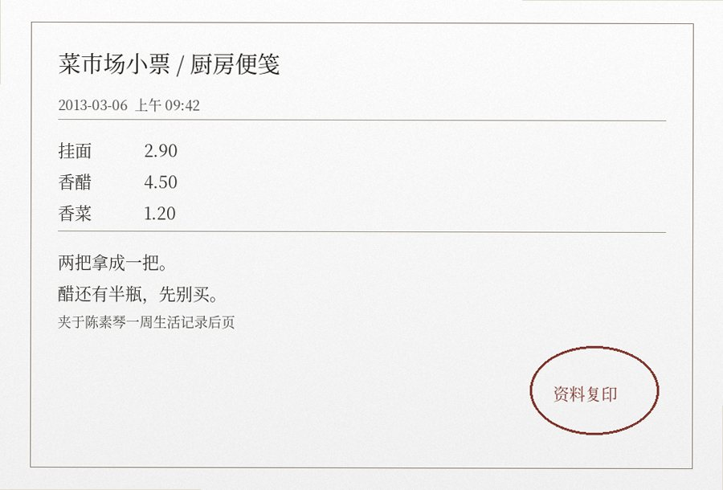

归席见证 · 陈素琴
正在阅览：归席见证 / 第12辑 / 1 of 2 返回卷目
陈素琴，58岁。丈夫十余年前在工地事故中去世。她参加最多的是“还口”。
今天挂面两块九。
本来拿了两把。
走到门口才想起来，一个人吃不了那么多，又退回去一把。
那瓶醋又过期了。
他以前吃面放很多，我嫌味大。
现在也没人用了。
他出门那天问我，晚上吃面还是吃饭。
我那会儿正生气，没回他。
后来总觉得得回一句。其实就说“吃面”也行。

陈素琴资料袋局部。票据、便签和厨房物品为整理时同页留存，未按主题重新排版。
卷内主题栏
以下三项与卷内三段记录对照。
日常摘录
“楼下水管又漏了。以前都是他去找物业，我跟人说这些总是说不清。”
“昨天买了香菜，回来才发现我其实不吃。以前是他吃。”
“冰箱下面那层总放面条。我换了两次位置，最后又放回去了。”
女儿来信 / 未署日期
“她不是天天哭。菜照买，水电费也会交，邻居快递还帮着收。可一说到那天晚上，她还是问我：‘我现在说吃面，还算不算回答？’”
本人补记
“表上写返名成功。我不知道怎么算成功。我就想把那句话回了。”
女儿来信摘录
2012-11-03 / 家属补充
她现在会自己做饭，也会出门。不是天天哭。可家里一说把爸爸衣服收一收，她就说“还口还没做完”。我们问做到什么时候算完，她自己也不知道。
2013-02-11 / 家属补充
旧衣服后来分掉一半，那只吃面的碗还在。她说“这就是家里的碗，不算遗物”。她这么一说，我们也不知道还能怎么讲。
物品登记员备注
白瓷面碗一只。本人坚持不列入“还手遗物”，理由：“原本就每天用。”
同卷附页 · 菜场、厨房与家属往来（5组）
一周生活记录
| 日期 | 陈素琴自记 |
|---|---|
| 周一 | 菜市场土豆便宜，买了三个。回家才想起以前他不吃土豆，还是切了一半。 |
| 周二 | 楼上晒被子掉下来，帮她送上去。晚上没有做还口，困。 |
| 周三 | 下雨。鞋底进水。回来煮挂面，醋放多了，倒掉一点汤。 |
| 周四 | 女儿打电话说周日来。问我要不要换厨房水龙头。先不换，还能用。 |
| 周五 | 晚上去了社里。那句话还是没说。回来路上买了两根葱。 |
| 周六 | 把旧外套拿出三件给女儿。那件灰的留下，袖口还有线头。 |
记录本没有总结页。最后一行只写：“明天女儿来，米不够，记得买。”
家中记事本 · 另页
周日
女儿下午来。带了排骨。说厨房地垫太滑，叫我换。我说下回再说。晚上她走了以后把剩饭装两盒，明天一盒中午吃。
次周一
物业来抄水表。师傅问家里几个人，我没听清，后来就说一个。以前他总抢着去看水表数。
次周三
社里有人问我为什么还留那个碗。我说也没坏，扔它干什么。回来洗碗的时候又看见碗底有一道磕印。
次周六
买面。新牌子比原来贵三毛，还是拿旧牌子的。结账的时候前面小孩一直哭，他爸给他买了棒棒糖。
该页没有“还口”字样。纸角记着燃气缴费号码和女儿家的门牌尾号。
冰箱门上的便条
没有日期
“米、盐、洗衣粉。香菜不用买，昨天还有。女儿周日下午来，排骨让她自己带。”
燃气缴费单背面
“户号别抄错。以前他记，我总找不到那张纸。”后面又写了四位数字，是女儿家门牌尾号。
物业维修联
厨房水龙头渗水。报修时间写在上午九点，处理结果栏写“住户说暂时还能用，改周日”。
这些纸和“还口”没有关系。陈素琴把它们夹在同一本本子里，前一页记菜价，后一页才写那句“晚上吃面还是吃饭”。有几页只记谁来收水费、楼下什么时候停电，整页没有丈夫的名字。
六月账页
6月2日
早市：挂面一把、青菜两斤、鸡蛋十个。卖菜的少找五毛，回去拿了。下午把阳台那盆葱换了土。
6月6日
女儿说周末不来，孩子发烧。冰箱里还有半块豆腐。水龙头晚上又滴，拿旧毛巾垫着。
6月11日
楼下王姐借醋。那瓶刚开没几天，她说味太酸。我尝了一下，也觉得酸。以前他倒很多。
6月15日
下午去交燃气费。回来经过面馆，门口贴着换老板。没有进去。晚上把灰外套洗了，线头又开。
6月19日
女儿送来新地垫，说别再摔。旧的卷起来放门后，第二天才扔。吃剩的挂面装一盒，明早热。
这一页只有一次提到静修社：“周五不去，外面雨大。”再下面是四个电话号码：物业、燃气、女儿和菜市场修秤的人。
女儿来时带走的东西
女儿每隔一两个月会来一次。她不再一次劝母亲“都收掉”，只在厨房和衣柜里一点点问。陈素琴有时答应，有时说下次。记录里没有哪一天突然完成整理。
2013-04-07
带走父亲旧衬衣两件。灰外套没拿。母亲说袖口还要缝一下。女儿把针线盒放到餐桌上，走时忘了拿。
2013-06-23
拿走工具箱。里面缺一把螺丝刀，陈素琴说可能还在阳台柜。两个人找了十分钟，没找到，就算了。
2013-09-15
厨房旧碗分出三只，留下一只白瓷面碗。女儿问“这只为什么一定要留”，她说“也不是一定，今天先别拿”。
2014-01-02
新年吃饭。女儿带孩子来，孩子拿那只白碗装瓜子。陈素琴没有阻止，只说别磕桌角。
最后一条旁边没有“还口”记录，只记着“孩子鞋小了，下回买大一码”。